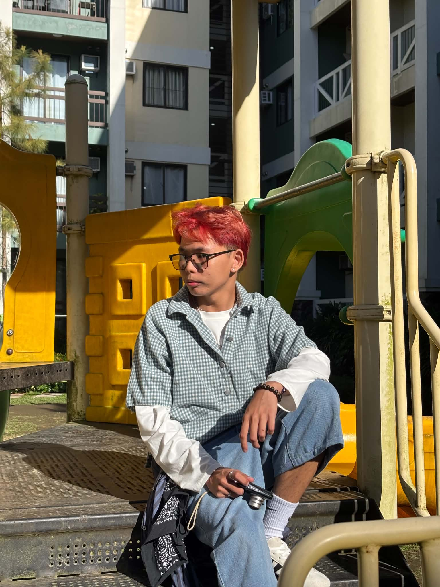

Darwin
Sta CruzVisual storyteller.
I create thoughtful photographs and visual content that capture moments, communicate stories, and bring creative ideas to life. Explore my photography, editorial work, and video projects.

Curiosity, creativity, and a camera ready to tell the next story.
Turning moments into meaningful visuals.
I am Darwin Sta Cruz, a dedicated and goal-oriented creative individual with an interest in photography, photojournalism, and digital content creation. I enjoy capturing genuine moments, developing visual concepts, and producing work that communicates a clear story.
My experience in student publications has helped me develop skills in editorial work, collaboration, communication, and working within deadlines. I am continuously learning, open to feedback, and eager to take on creative opportunities.
Frames that tell stories.
A selection of photography projects and visual experiments. Replace these sample images with your own photoshoots and editorial work.
Video edits & digital content.
Showcase your reels, highlight videos, short films, and other editing projects in this section.
From raw footage to a finished story.
A space for your video editing work, including pacing, transitions, color adjustments, sound, and visual sequencing.
Creative work shaped by collaboration.
My background in freelance photography and student publications has strengthened my creative and organizational skills.
Freelance Photographer
Plan and capture photo projects, communicate with clients, edit images, and deliver final outputs.
The BEAT Publication
Creative Director · Circulation Manager · Chief Photojournalist (as applicable to your actual roles and dates).
The Sublime & Ka Pule
News Editor · Editorial Editor · Photojournalist (as applicable to your actual roles and dates).
Let's create
something memorable.
For photography sessions, event coverage, creative collaborations, or video editing inquiries, feel free to reach out.